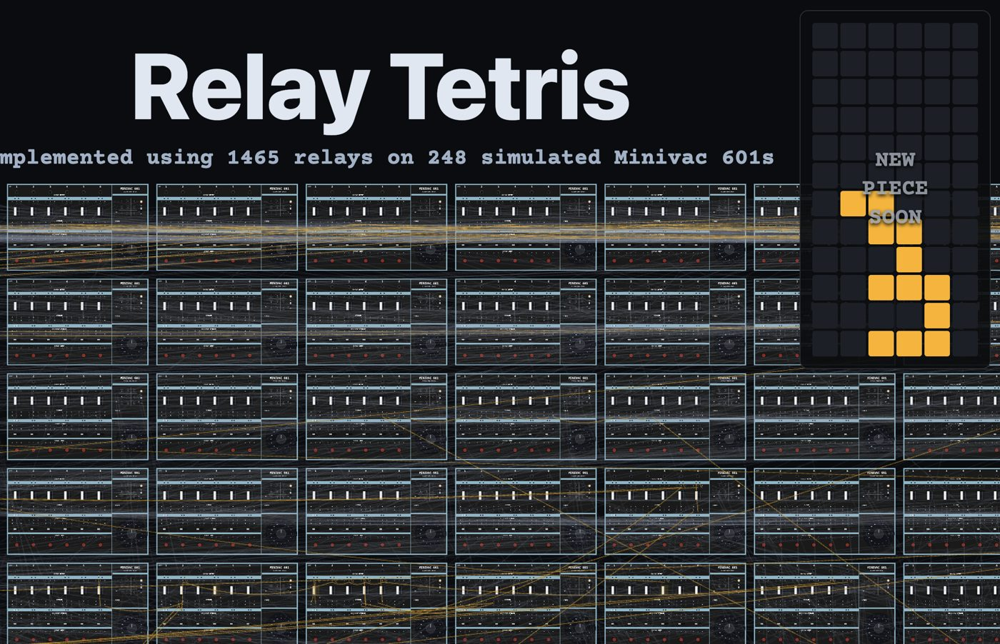
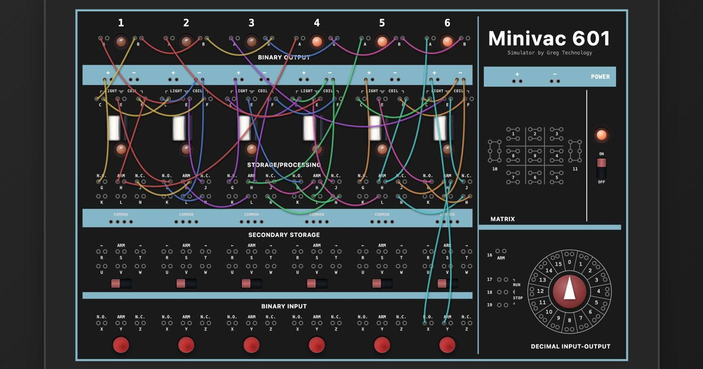

模拟器是对的
The Simulator Was Right

Greg Sadetsky 在网上叫 Greg Technology。他做的东西表面上是一台老机器的模拟器。Minivac 601，Claude Shannon 设计，一九六一年由 Scientific Development Corporation 出品，八十五美元，六个继电器，六位存储，六盏指示灯，一个十六格的电机转盘。手册里它的天花板是井字棋和一部电梯的控制逻辑。Sadetsky 把它搬进了浏览器，底层用的是 Willy McAllister 的 circuit-sandbox，电路是真解的——每一次按钮按下去，解的是电流。然后他做了一件手册里没有的事：把二百四十八台接在一起。二百四十八台身上带着一千四百八十八个继电器，其中一千四百六十五个进了电路，六千四百九十九根线，让它们打俄罗斯方块。他自己的说明很短：一九六一年要这么干，得花掉今天的大约二十三万美元；「操作起来很痛苦，但它也不是不是俄罗斯方块」；「没有所谓的『代码』」。
先把这台机器本身的位置摆清楚。Shannon 一九三七年那一凿——把布尔代数落到开关电路上——长成了今天整个数字世界的已构，逻辑门、触发器、寄存器，全部有名字，全部在教科书里。Minivac 是那一凿掉下来的碎屑：晶体管正在把继电器扫出门的那几年，继电器被留在了「儿童教具」这一格里。它连玩具都没当稳。公司发现企业客户嫌它是玩具，就把同一台机器漆成枪灰色，价格抬到四百七十九美元，改名 6010，卖得很好。一台机器，两个价，差别只在漆。

但真正的余项不在这台机器上，在一份文件里：仓库根目录的 SIMULATION-ERRATA.md。链条是这样的。一九六一年出厂时，这台机器就带一张勘误表——Sadetsky 把它和六本手册一起挂在站上，并且专门提醒「别忘了看勘误」。第四册第六十八到六十九页有一个单输入触发器电路，勘误对它的全部说明是一句话：操作单输入触发器时，请把按钮 6 按慢一点，灯 6 会灭了又亮，指示整个触发器的状态。二零二五年十一月二十日，一个叫 tmcintos 的人照着这张图在模拟器里接线，接不出来，开了 issue。他的默认假设是模拟器错了。这个假设完全合理：模拟器的职责就是复现，凡有差异，当然算它的账。
二零二六年八月十八日，Sadetsky 把这条电路接到了一台还活着的真机上，分阶段接，每一步都与模拟器对得上；按到第二下，六号继电器物理上开始颤振、发出蜂鸣。结论他写成一行全大写：模拟器是对的。第四册印出来的那个电路，本身就不会干净地翻转。机制是这样：两根线把继电器六的线圈出线永久地接到了灯六上，第二次按下时线圈两端同时带正，继电器落下；落下的瞬间电流又从灯六那条路绕回来，约七十一到七十七毫安，高过这一只的吸合值，于是重新吸起，于是嗡。一台机器是嗡还是干净地翻，取决于它自己那一只继电器的吸合值与大约七十五毫安的关系。逐只不同。而厂家一直是知道的——第七册第八到九页就印着一张逐继电器的偏置校准表。
这是余项最严格的形态。电路图是形式化，它承载得了拓扑，承载不了这一只继电器自己的吸合毫安数；承载不了的那部分不会凭空消失，它会从别处冒出来，而它冒出来的形式，就是那句「按慢一点」。那句话不是电路说明，是把形式化漏掉的东西转嫁给人的手——用人的节奏去补机器的方差。六十五年里没人去量它，因为没人有理由量：按慢一点确实管用，管用就不必命名。直到有人造出一台不会按慢的机器——模拟器不懂什么叫慢，它只解方程——余项才被迫显形。量出来是这样：真机一百七十二毫安，模拟一百五十八毫安，差百分之九。接着是最关键的一笔。他没有把阈值拧到严丝合缝。文件末尾留着一条：三线圈串联那个边界情况是明知故错的（模拟：能用；真机：不能）。「明知故错」四个字是拒绝收口。他大可以调参数把这条也对上，那会是第一凿，他不凿，他把它写下来。
所以现在看比以后看重要，有三个具体理由。第一，它还没有名字，而且是作者自己承认没有。TODO 文件里有一行原话：要不要写个叙事？我为什么在乎这个？这为什么有意思？一件已经能玩、能测、能量的东西，它的作者还在问它是什么——这个状态不会持续很久。同一份文件里还有一句来自使用者的话，被他标成「这才是重点，不是打磨项」：如果没有视觉，人们会以为这是俄罗斯方块。它不是。他很清楚这东西会被它长得像的那个东西接管。第二，底座在消失。能工作的 Minivac 601 本来就少——卖得不好，又是机电结构，动件磨到停。那份勘误里每一个「真机验证」，都依赖一台还活着的机器和一个愿意把电表串进线里的人。最后一台停下的那天，这道缝就不再可测，模拟器会成为唯一的记录；那时候余项不是被解决，是被封上。第三，仓库现在十六颗星，而 TODO 排在最前面的是那个「哇」视图：把几百台机器铺在一张画布上，缩小看整面墙，放大看单根线和继电器衔铁在动。那个视图一上线，这件事就会被到处转，然后被叫作「那个用继电器做俄罗斯方块的人」。眼下还不是那一天。
minivac.greg.technology ↗Greg Sadetsky goes by Greg Technology online. What he has built looks, on the surface, like a simulator of an old machine. The Minivac 601: designed by Claude Shannon, sold by Scientific Development Corporation in 1961 for $85, six relays, six bits of storage, six indicator lamps, a sixteen-position motorized dial. Its documented ceiling was tic-tac-toe and the control logic of a single elevator. Sadetsky put it in the browser on top of Willy McAllister's circuit-sandbox, and the circuit is genuinely solved — every button press solves for current. Then he did something the manuals do not contain: he wired 248 of them together. Those 248 machines carry 1,488 relays, of which 1,465 are in the circuit, joined by 6,499 wires, and they play Tetris. His own account of it is short: doing this in 1961 would have cost about $230,000 in today's money; "Gameplay is painful, but it's not not Tetris"; "There's no 'code' to speak of."
Place the machine first. Shannon's 1937 chisel — Boolean algebra brought down onto switching circuits — grew into the entire construct of the digital world. Logic gates, flip-flops, registers: all named, all in the textbooks. The Minivac is the chip that fell off that cut. In precisely the years the transistor was sweeping relays out the door, the relay was left behind in the slot marked children's teaching aid. It could not even hold that position securely. When corporate buyers dismissed it as a toy, the company painted the same machine gunmetal gray, raised the price to $479, renamed it the 6010, and sold it well. One machine, two prices, and the difference was paint.
But the remainder is not the machine. It is a file: SIMULATION-ERRATA.md, in the root of the repository. The chain runs like this. In 1961 the Minivac shipped with an errata sheet — Sadetsky hosts it alongside the six manuals and tells you not to forget it. Book IV, pages 68 to 69, prints a single-input flip-flop circuit, and the errata's entire comment on it is one sentence: push pushbutton 6 slowly when operating the single-input flip-flop; light 6 will go off and on, indicating the state of the whole flip-flop. On November 20, 2025, someone named tmcintos wired that diagram in the simulator, could not make it work, and opened an issue. His default assumption was that the simulator was wrong. That assumption is entirely reasonable: a simulator's job is to reproduce, so any divergence is charged to its account.
On August 18, 2026, Sadetsky wired the circuit on a surviving physical Minivac, in stages, matching the simulator at every step — and on the second press, relay 6 physically chattered and buzzed. He wrote the conclusion in capitals: THE SIMULATOR WAS RIGHT. The circuit as printed in Book IV does not cleanly toggle. The mechanism: two wires permanently tie relay 6's coil-out to light 6, so on the second press both ends of the coil sit at plus and the relay drops; the instant it drops, current returns through the light-6 path at roughly 71 to 77 milliamps, above that particular relay's pickup, so it re-picks, so it buzzes. Whether a given unit buzzes or toggles cleanly depends on that one relay's pickup against about 75 milliamps. It varies unit to unit. And the manufacturer knew all along — Book VII, pages 8 to 9, prints a per-relay bias-calibration chart.
This is the remainder in its strictest form. The circuit diagram is the formalization. It can carry topology; it cannot carry the pickup current of this one relay. What the formalization cannot carry does not evaporate — it surfaces elsewhere, and the form it took here is the sentence press slowly. That sentence is not a circuit instruction. It is a transfer of the dropped remainder onto a human hand: use the rhythm of a person's thumb to absorb the variance of a manufactured part. For sixty-five years nobody measured it, because nobody had reason to. Pressing slowly worked, and what works does not need a name. It took building a machine that cannot press slowly — the simulator has no notion of slow, it only solves equations — to force the remainder into view. Measured: 172 milliamps on the device, 158 in the simulation, 9% agreement. Then comes the decisive stroke. He did not tune the threshold until everything lined up. The file ends with a line left standing: the 3-coils-in-series edge case is knowingly mispredicted (sim: works, device: doesn't). Knowingly is a refusal to close. He could have turned a parameter and made this one agree too. That would have been the first chisel. He declines it and writes it down instead.
Three reasons seeing this now matters more than seeing it later. First, it has no name yet, and the author is the one saying so. The TODO file contains the line, in his own hand: present/write narrative? why do i care? why is this interesting? A thing that already runs, already tests, already measures, and whose maker is still asking what it is — that state does not last long. The same file carries a note from a user that he has flagged as "this is the point, not a polish item": if there's no wow/visual people will think this is tetris. it's not. He knows the object will be annexed by the thing it resembles. Second, the substrate is going. Working Minivac 601s were always scarce — weak sales, and an electromechanical design whose moving parts wear until they stop. Every device-verified line in that errata depends on a machine still alive and a person willing to put a meter in series with a wire. On the day the last one stops, the gap becomes unmeasurable and the simulator becomes the only record; at that point the remainder is not resolved, it is sealed. Third, the repository has sixteen stars, and the item at the top of the TODO is the wow view: hundreds of machines on one canvas, zoom out for the whole wall, zoom in for individual wires and relay armatures moving. The day that view ships, this gets passed around everywhere and becomes "the guy who made Tetris out of relays." That day has not come.
minivac.greg.technology ↗